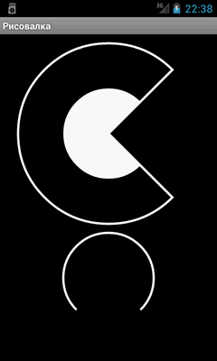
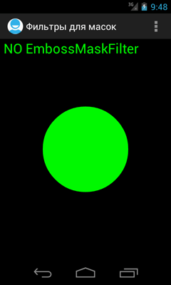
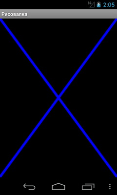
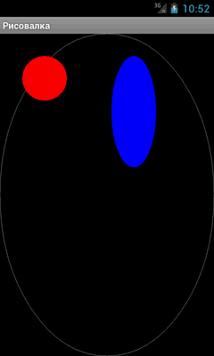
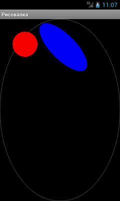
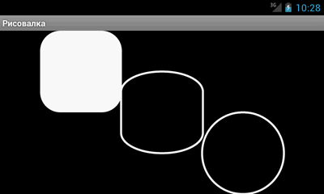
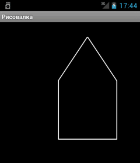
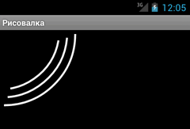
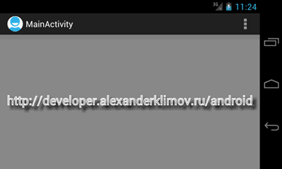

/* Моя кошка замечательно разбирается в программировании. Стоит мне объяснить проблему ей - и все становится ясно. */
John Robbins, Debugging Applications, Microsoft Press, 2000

/* Моя кошка замечательно разбирается в программировании. Стоит мне объяснить проблему ей - и все становится ясно. */
John Robbins, Debugging Applications, Microsoft Press, 2000
Класс Canvas предоставляет методы для рисования, которые отображают графические примитивы на исходном растровом изображении. При этом надо сначала подготовить кисть (класс Paint), который позволяет указывать, как именно графические примитивы должны отображаться на растровом изображении (цвет, обводка, стиль, сглаживание шрифта и т.д.). А также нужно указать Bitmap — поверхность, на которой происходит рисование.
Android поддерживает полупрозрачность, градиентные заливки, округленные прямоугольники и сглаживание. Из-за ограниченных ресурсов векторная графика пока что не поддерживается, вместо этого используется традиционная растровая перерисовка.
Класс Canvas можно назвать обёрткой вокруг растрового изображения, которое вы будете использовать в качестве полотна для своих художественных опытов. Он предоставляет набор методов вида draw* для создания изображений котов и других объектов.
Ниже представлены некоторые методы класса Canvas
Мы уже изучали основы рисования в первом месяце обучения (Работаем с графикой. Основы). Можно вернуться к этому проекту, закомментировать код вывода графики и продолжить изучение рисования при помощи методов класса Canvas.
Метод drawArc() позволяет рисовать дуги и сектора. Ниже приводится код для трёх вариантов: сектор с заливкой (похож на PacMan), сектор без заливки (контур) и часть дуги:
float width = 400f;
float height = 240f;
float radius = 100f;
Path path = new Path();
path.addCircle(width, height, radius, Path.Direction.CW);
Paint paint = new Paint();
paint.setColor(Color.WHITE); // установим белый цвет
paint.setStrokeWidth(5);
paint.setStyle(Paint.Style.FILL); // заливаем
paint.setAntiAlias(true);
float center_x, center_y;
center_x = 240;
center_y = 220;
final RectF oval = new RectF();
oval.set(center_x - radius, center_y - radius, center_x + radius,
center_y + radius);
canvas.drawArc(oval, 45, 270, true, paint); // рисуем пакмана
// рисуем большого пакмана без заливки
paint.setStyle(Paint.Style.STROKE);
oval.set(center_x - 200f, center_y - 200f, center_x + 200f,
center_y + 200f);
canvas.drawArc(oval, 45, 270, true, paint);
paint.setStyle(Paint.Style.STROKE);
// рисуем разорванное кольцо
center_y = 540;
oval.set(center_x - radius,
center_y - radius,
center_x + radius,
center_y + radius);
canvas.drawArc(oval, 135, 270, false, paint);

Нарисуем зелёный круг.
float w, h, cx, cy, radius;
w = getWidth();
h = getHeight();
cx = w / 2;
cy = h / 2;
if (w > h) {
radius = h / 4;
} else {
radius = w / 4;
}
Paint paint = new Paint();
paint.setColor(Color.GREEN); // установим зеленый цвет
paint.setStyle(Paint.Style.FILL);
canvas.drawCircle(cx, cy, radius, paint);

Пожалуй, самый простой метод - указываем начальные и конечные координаты отрезка.
package ru.alexanderklimov.simplepaint;
import android.content.Context;
import android.graphics.Canvas;
import android.graphics.Color;
import android.graphics.Paint;
import android.view.View;
public class Draw2D extends View {
float w, h, cx, cy, radius;
Paint paint;
public Draw2D(Context context) {
super(context);
init();
}
private void init() {
paint = new Paint();
paint.setColor(Color.BLUE);
paint.setStrokeWidth(10);
}
@Override
protected void onDraw(Canvas canvas) {
canvas.drawLine(0, 0, 480, 650, paint);
canvas.drawLine(480, 0, 0, 650, paint);
}
}

Метод drawOval() рисует овалы. Естественно, если вы зададите одинаковые размеры ширины и высоты, то получите круг/окружность.
@Override
protected void onDraw(Canvas canvas) {
Paint paint = new Paint();
paint.setStyle(Paint.Style.STROKE);
paint.setColor(Color.GRAY);
paint.setAntiAlias(true);
// овал по всему экрану
RectF oval1 = new RectF(0, 0, getWidth(), getHeight());
canvas.drawOval(oval1, paint);
// овал в виде круга (одинаковые размеры высоты и ширины)
paint.setStyle(Paint.Style.FILL);
paint.setColor(Color.RED);
RectF oval2 = new RectF(50, 50, 150, 150);
canvas.drawOval(oval2, paint);
// маленький синий овал
paint.setColor(Color.BLUE);
RectF oval3 = new RectF(250, 50, 350, 300);
canvas.drawOval(oval3, paint);
}

Если вам нужно наклонить овал в ту или иную сторону, то поверните холст на требуемый угол с помощью метода rotate(). Не забудьте потом повернуть холст обратно, что следующие фигуры выводились нормально.
Повернём синий овал из предыдущего примера:
float rotate_center_x = 200;
float rotate_center_y = 200;
float rotate_angle = 45;
// поворачиваем холст
canvas.rotate(-rotate_angle, rotate_center_x, rotate_center_y);
// маленький синий овал
paint.setColor(Color.BLUE);
RectF oval3 = new RectF(250, 50, 350, 300);
canvas.drawOval(oval3, paint);
// возвращаем холст на прежний угол
canvas.rotate(rotate_angle, rotate_center_x, rotate_center_y);

У метода существует три перегруженные версии для рисования прямоугольника. Рассмотрим один из них:
@Override
protected void onDraw(Canvas canvas) {
// TODO Auto-generated method stub
super.onDraw(canvas);
// создаем пустой прямоугольник и задаем координаты верхней левой и нижней правой точек
Rect myRect = new Rect();
myRect.set(0, canvas.getHeight()/2, canvas.getWidth(), canvas.getHeight());
// кисть
Paint greenPaint = new Paint();
// цвет кисти - зеленый
greenPaint.setColor(Color.GREEN);
// тип - заливка
greenPaint.setStyle(Paint.Style.FILL);
// закрашиваем зелёным прямоугольником вторую половину экрана
canvas.drawRect(myRect, greenPaint);
}
Для рисования прямоугольников с закруглёнными углами используется метод drawRoundRect (RectF rect, float rx, float ry, Paint paint).
В параметрах указываются ограничивающий прямоугольник, радиусы овалов для скругления углов и кисть.
Реализуем три разных способа:
float width = (float) getWidth();
float height = (float) getHeight();
float radius;
if (width > height) {
radius = height / 4;
} else {
radius = width / 4;
}
Paint paint = new Paint();
paint.setAntiAlias(true);
paint.setColor(Color.WHITE);
paint.setStrokeWidth(5);
paint.setStyle(Paint.Style.FILL);
float center_x, center_y;
center_x = width / 4;
center_y = height / 4;
final RectF rect = new RectF();
rect.set(center_x - radius, center_y - radius, center_x + radius,
center_y + radius);
canvas.drawRoundRect(rect, 50, 50, paint);
paint.setStyle(Paint.Style.STROKE);
center_x = width / 2;
center_y = height / 2;
rect.set(center_x - radius,
center_y - radius, center_x + radius, center_y + radius);
canvas.drawRoundRect(rect, 100, 50, paint);
paint.setStyle(Paint.Style.STROKE);
center_x = width * 3 / 4;
center_y = height * 3 / 4;
rect.set(center_x - radius, center_y - radius, center_x + radius,
center_y + radius);
canvas.drawRoundRect(rect, 100, 100, paint);

Для рисования соединённых отрезков можно использовать метод drawPath(), указав в параметрах настройки для рисования и массив координат точек. Для удобства добавим в класс Draw2D новый класс Pt, который позволит быстро создать массив точек с заданными координатами. Далее настраиваем объекты для рисования и формируем путь через созданный массив. В результате получим кошкин дом.
// Класс для создания точки
class Pt {
float x, y;
Pt(float _x, float _y) {
x = _x;
y = _y;
}
}
// создаем массив точек
Pt[] myPath = { new Pt(300, 50), new Pt(200, 200), new Pt(200, 400),
new Pt(400, 400), new Pt(400, 200), new Pt(300, 50), };
@Override
protected void onDraw(Canvas canvas) {
super.onDraw(canvas);
Paint paint = new Paint();
paint.setColor(Color.WHITE);
paint.setStrokeWidth(3);
paint.setStyle(Paint.Style.STROKE);
Path path = new Path();
// переходим в первую точку рисования
path.moveTo(myPath[0].x, myPath[0].y);
// рисуем отрезки по заданным точкам
for (int i = 1; i < myPath.length; i++){
path.lineTo(myPath[i].x, myPath[i].y);
}
// выводим результат
canvas.drawPath(path, paint);
}

Путь можно составлять не только из точек, но и из фигур, например, дуг. Сначала формируем дугу, добавляем её в путь при помощи метода Path.addArc(), повторяем операцию снова несколько раз, а в конце выводим окончательынй вариант:
float radius = 150;
Paint paint = new Paint();
paint.setAntiAlias(true);
paint.setColor(Color.WHITE);
paint.setStrokeWidth(5);
paint.setStyle(Paint.Style.STROKE);
Path path = new Path();
float center_x, center_y;
center_x = 0;
center_y = 0;
final RectF oval = new RectF();
oval.set(center_x - radius, center_y - radius, center_x + radius,
center_y + radius);
path.addArc(oval, 10, 70); // первая дуга
oval.set(center_x - radius - 10, center_y - radius - 10, center_x + radius + 20,
center_y + radius + 20);
path.addArc(oval, 5, 80); // вторая дуга
oval.set(center_x - radius- 20, center_y - radius -20, center_x + radius + 40,
center_y + radius + 40);
path.addArc(oval, 0, 90); // третья дуга
canvas.drawPath(path, paint); // выводим всё вместе

Можно нарисовать символ парашюта:
Paint paint = new Paint();
paint.setAntiAlias(true);
paint.setColor(Color.WHITE);
paint.setStrokeWidth(5);
paint.setStyle(Paint.Style.STROKE);
Path path = new Path();
path.moveTo(160.0f, 240.0f);
path.lineTo(140.0f, 200.0f);
path.addArc(new RectF(140, 180, 180, 220), -180, 180);
path.lineTo(160.0f, 240.0f);
path.close();
canvas.drawPath(path, paint);
С помощью метода drawText() можно выводить текст в заданной позиции. Добавим сначала несколько эффектов, чтобы казалось, что текст парит над поверхностью:
@Override
protected void onDraw(Canvas canvas) {
super.onDraw(canvas);
canvas.drawColor(Color.GRAY);
Paint shadowPaint = new Paint();
shadowPaint.setAntiAlias(true);
shadowPaint.setColor(Color.WHITE);
shadowPaint.setTextSize(35.0f);
shadowPaint.setStrokeWidth(2.0f);
shadowPaint.setStyle(Paint.Style.STROKE);
shadowPaint.setShadowLayer(5.0f, 10.0f, 10.0f, Color.BLACK);
canvas.drawText("http://developer.alexanderklimov.ru/android", 20, 200, shadowPaint);
}
